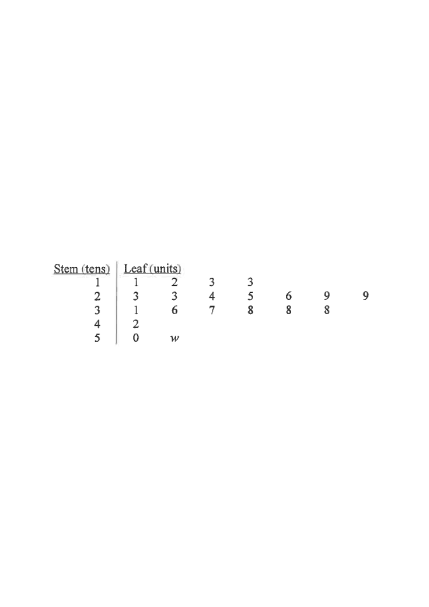

Step 0 — Overview: 20 letters; the hidden unit digit $w$ ($0$–$9$) sits in the stem-$5$ row.
The stem-and-leaf diagram below shows the distribution of the weights (in grams) of the letters in a bag.
| Stem (tens) | Leaf (units) |
|---|---|
| 1 | 1 2 3 3 |
| 2 | 3 3 4 5 6 9 9 |
| 3 | 1 6 7 8 8 8 |
| 4 | 2 |
| 5 | 0 w |
(e.g. stem 1, leaf 3 represents the weight 13 grams)
It is given that the range of the above distribution is the triple of its inter-quartile range.
(a) Find $w$. [4 marks]
(b) If a letter is randomly chosen from the bag, find the probability that the weight of the chosen letter is not less than the mode of the distribution. [2 marks]

Reading the diagram row by row gives the 20 weights in ascending order:
$11,12,13,13,\;23,23,24,25,26,29,29,\;31,36,37,38,38,38,\;42,\;50,\,5w$
So the smallest value is $11$ and the largest is $50+w$ (since both possible values of $w$, $0$ and $5$, keep $5w$ the greatest).
$\text{Range} = \text{largest} - \text{smallest} = (50+w) - 11 = (w+39)$ grams.
With $n = 20$:
$Q_1$ = mean of the $5$th and $6$th values $= \dfrac{23+23}{2} = 23$ g,
$Q_2$ = mean of the $10$th and $11$th values $= \dfrac{29+29}{2} = 29$ g,
$Q_3$ = mean of the $15$th and $16$th values $= \dfrac{38+38}{2} = 38$ g.
$\therefore\ \text{Inter-quartile range} = Q_3 - Q_1 = 38 - 23 = 15$ grams.
Range $=3\times$ (inter-quartile range):
$w+39 = 3(15) = 45$
$\therefore\ w = 6$
With $w=6$ the weights are:
$11,12,13,13,\;23,23,24,25,26,29,29,\;31,36,37,38,38,38,\;42,\;50,56$
The value occurring most often is $38$ g (it appears $3$ times).
$\therefore$ Mode $=38$ grams.
Weights not less than the mode: $38,38,38,42,50,56$ — that is $6$ letters.
$\therefore P = \dfrac{6}{20} = \dfrac{3}{10}$